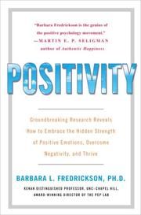

Positivity: Groundbreaking Research to Release Your Inner Optimist and Thrive
Book·Barbara L. Fredrickson, 2009·积极情绪的力量

Fredrickson explains how positive emotions broaden attention and build resources, and acknowledges that more positivity is not always better.
- Author
- Barbara L. Fredrickson
- Year
- 2009
- Difficulty
- Beginner
- Kind
- Overview
- Schools
- Positive Psychology
- Core theories
- Broaden-and-Build Theory
Editions
- Chinese edition 《积极情绪的力量》 【美】芭芭拉•弗雷德里克森 / 芭芭拉·弗雷德里克森 · tr. 王珺 / 阳志平 校 / 阳志平 · 中国人民大学出版社 · 2010 Douban 7.6 (640 ratings) Douban page ↗
- English edition Positivity: Groundbreaking Research to Release Your Inner Optimist and Thrive Barbara L. Fredrickson · Crown, first edition · 2009 Open Library ↗